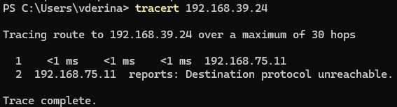

E commerce deploy
В проекте было использовано демонстрационное приложение "E-commerce".
Подробнее о логике работы приложения на странице: Reverse engineering приложения "E-commerce".
1 шаг. Развертывание микросервисного приложения с помощью helm¶
-
Клонируем репозиторий:
-
Меняем в манифесте
microservices-demo/helm-chart/templates/frontend.yamlтип сервиса с LoadBalancer на NodePort -
Развертываем приложение в кластере с помощью helm:
Все развернулось успешно:
3 шаг. Настройка внешнего доступа к кластеру¶
По умолчанию Minikube не пробрасывает порты Kubernetes на хост. Можно пойти двумя путями:
1 вариант. Использовать проброс портов через kubectl port-forward (уровень приложения, туннелирование через API Kubernetes) через команду:
Чтобы посмотреть PID процесса на порту 8080:
Как это работает?
-
kubectl связывается с kube-api.
-
kube-api находит под, связанный с сервисом frontend-external, и устанавливает соединение с ним.
-
kubectl создает TCP-порт на локальном компьютере (127.0.0.1:32728). Этот порт связан с портом 80 пода, который обслуживает сервис frontend-external.
-
После обращения к http://localhost:32728, kubectl перехватывает этот запрос и передает его через kube-api в под, связанный с сервисом frontend-external.
-
Ответ от пода передается обратно через API Kubernetes и возвращается на локальный порт 32728.
2 вариант. Получить доступ к виртуальной машине, а затем доступ к приложению через NodePort.
Адрес хоста: 192.168.75.123
Адрес сервера с гипервизором: 192.168.75.11
Адрес виртуальной машины с minikube на сервере: 192.168.39.24
Сначала на локальной машине, которая находится в одной сети с сервером, нужно настроить маршрутизацию через шлюз. Это нужно для того, чтобы все пакеты к ip адресам из сети 192.168.0.0/16 виртуальной машины отправлялись через сервер 192.168.75.11, так как сервер имеет интерфейс 192.168.39.1 для доступа к сети.
Изначально в Windows PowerShell от администратора была выполнена команда:
По итогу вывод route print показал:Network Destination Netmask Gateway Interface Metric
192.168.0.0 255.255.0.0 On-link 192.168.75.123 26
Поэтому команда была выполнена повторно с нужным IP адресом в качестве шлюза и с флагом -p (persistent):
route print показал две записи:
Network Destination Netmask Gateway Interface Metric
192.168.0.0 255.255.0.0 On-link 192.168.75.123 26
192.168.0.0 255.255.0.0 192.168.75.11 192.168.75.123 26
По итогу шлюз не сработал, потому что в таблице маршрутизации есть две записи с одинаковой метрикой (приоритетом). В таких случаях система выбирает первую подходящую запись и отправляет пакеты по правилам, указанным в ней, игнорируя вторую запись.
Чтобы шлюз заработал, нужно было не забыть удалить ту неверную запись ИЛИ уменьшить значение метрики для приоритетной записи, например:
илиПробуем еще раз:

Шлюз заработал.
Теперь нужно на сервере включить пересылку пакетов между интерфейсами.
Для этого открываем файл /etc/sysctl.conf и добавляем строку:
Применяем изменения:
Все еще нет доступа:
В поисках проблемы, проверяем таблицу маршрутизации на сервере:
Для сети 192.168.39.0/24 есть маршрут, так что сервер 192.168.75.11 после получения пакетов от хоста знает, как отправить их отправить ВМ.
Была теория, ICMP-трафик заблокирован. Были добавлены правила:
sudo iptables -A INPUT -p icmp --icmp-type echo-request -j ACCEPT
sudo iptables -A OUTPUT -p icmp --icmp-type echo-reply -j ACCEPT
Но результат тот же:
Команда для проверки какой виртуальный интерфейс к какому мосту подключен:
Команда для анализа сетевого трафика:
Видим, информацию о том, что пакет с IP 192.168.75.123 был отправлен виртуальной машине 192.168.39.24, однако в следующей записи устройство с IP-адресом 192.168.75.11 сообщило устройству 192.168.75.123, что адрес 192.168.39.24 недоступен.
Проверим настройки файерволла на сервере (192.168.75.11).
Проверка правил iptables с использованием команды:
Пояснения к chains, управляемыми libvirt
LIBVIRT_FWI - цепочка управляет входящим трафиком, который проходит через интерфейсы виртуальных мостов
LIBVIRT_FWO - цепочка управляет исходящим трафиком, который проходит через интерфейсы виртуальных мостов
LIBVIRT_FWX - цепочка управляет пересылкой трафика между интерфейсами виртуальных мостов
LIBVIRT_INP - цепочка управляет входящим трафиком на интерфейсы виртуальных машин
LIBVIRT_OUT - цепочка управляет исходящим трафиком от интерфейсов виртуальных машин
Общая структура правил iptables
pkts: Количество пакетов, обработанных этим правилом.
bytes: Общий объем данных (в байтах), обработанных этим правилом.
target: Действие, которое будет выполнено, если пакет соответствует правилу (например, ACCEPT, REJECT, DROP).
prot: Протокол (например, 0 — все протоколы, tcp, udp, icmp).
opt: Дополнительные опции (часто не используется и обозначается как --).
in: Входной интерфейс (например, virbr0, virbr1).
out: Выходной интерфейс.
source: Источник трафика (IP-адрес или подсеть).
destination: Назначение трафика (IP-адрес или подсеть).
Видим блокирующие правила REJECT (отправляет уведомление о сбросе пакета удалённому хосту, в то время как DROP — просто рубит без уведомления) у цепочек LIBVIRT_FWI и LIBVIRT_FWO для всех протоколов с отправкой сообщения icmp-port-unreachable.
Таким образом, прошлая команда по изменению правил iptables была выполнена не для тех цепочек.
Вставляем в начало цепочек ACCEPT правила для всего входящего трафика, который направлен на все виртуальные мосты:
Пинг успешно проходит, сайт с хоста 192.168.75.123 открывается по запросу http://192.168.39.24:32728/